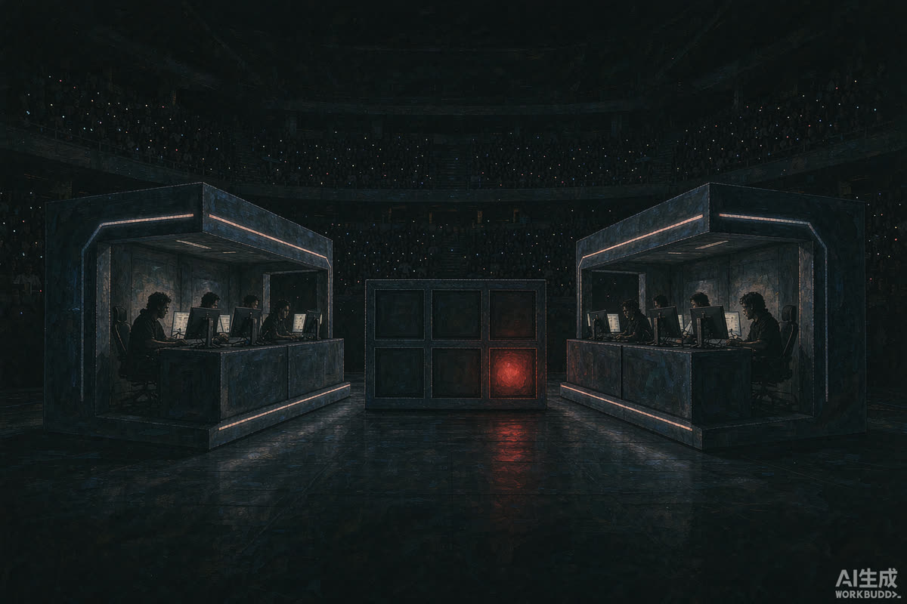

S16 瑞士轮 HLE 0-1 IG：输一局不可怕，可怕的是输掉的方式
瑞士轮第二轮，HLE 0 比 1 不敌 IG。BO1 没有试错空间，这场球的价值不在积分，而在两队把各自的状态底牌提前摊给了所有人看。
瑞士轮的残酷之处在于赛制本身：单局定胜负，赢的往上走，输的立刻贴到淘汰边缘。HLE 与 IG 这一局，双方都清楚没有第二把钥匙。
从过程看，IG 赢在敢打——前期节奏主动权抓在自己手里，不给对手从容运营的时间；HLE 则全程在被动接招，等一个没有出现的翻盘窗口。

▲ 图注：瑞士轮的舞台没有冷板凳（号外风 · 示意）
乐观派 ▸ 瑞士轮输一场天没塌，去年不乏前两轮磕磕绊绊最后走得很远的队伍，调整能力才是八强赛的通行证。
担忧派 ▸ 问题不在比分在过程——被动接招的打法若不修正，下一场只会更难受，赛制不会给你第二次"慢慢来"。
两边都有道理，但权重不同：小组赛看下限，瑞士轮看调整速度。输了球不可怕，输了球还不知道输在哪，才致命。
IG 这一局赢的不是强度，是选择的勇气；HLE 该补的不是练度，是敢把胜负押在自己节奏上的决心。瑞士轮淘汰的是犹豫的人。
后续盯什么 WATCHLIST
01 · HLE 下一轮的 BP：是否敢拿前期阵容，是调整诚意的第一信号
02 · IG 能否把这种节奏执行力复制到强队身上，而非一场论
03 · 两队如果再次相遇，看谁先变阵——瑞士轮的第二次交手永远是心理战
你觉得 HLE 这局输在 BP 还是状态？评论区亮观点，赞最高的下期单独写。
口径说明：赛果以官方为准；观点仅代表编辑部；本栏目不站队、只拆事。